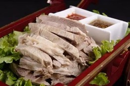
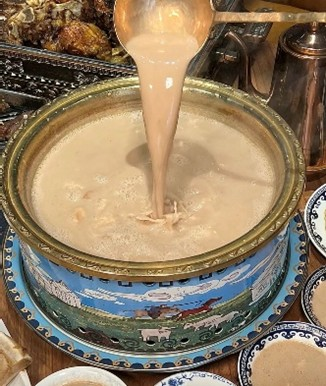

手把肉
🔴简介： 手把肉是蒙古族最传统的肉食，采用整块羊肉清水煮熟，直接用手抓着吃，因此得名。
🔴历史：手把肉的历史可追溯到蒙古帝国时期，成吉思汗及其军队在征战过程中，采用最简单高效的烹饪方式——宰羊、清煮、手抓食用，以节省时间和体力。随着游牧文化的发展，手把肉成为蒙古族日常饮食的核心部分，并在清代流传至汉族、回族等周边民族。如今，它已成为内蒙古宴请宾客的招牌菜，甚至在全国范围内流行。
🔴发展： 传统手把肉的吃法较为粗犷，如今在餐厅里，手把肉多会搭配蘸料（蒜泥、酱油、草原咸奶茶等），或发展成烤羊腿、烤全羊等多种风味。

奶茶
🔴简介： 内蒙古奶茶是一种以砖茶、牛奶或羊奶熬制的咸味茶饮，与甜奶茶不同，口感醇厚且具有温补作用。
🔴历史：
早在匈奴、鲜卑时期，游牧民族就已经形成了饮用奶茶的习惯。当时的北方游牧民长期在草原上放牧，砖茶和牛羊奶的结合不仅能提供热量，还能缓解高脂肪饮食带来的油腻感。到元朝时期，奶茶文化随着蒙古帝国的扩张传播至中原及中亚地区，甚至影响到俄罗斯、西藏等地。如今，奶茶仍是蒙古族日常生活的重要组成部分，常与炒米、酥油、奶皮子等搭配食用。
🔴发展： 传统奶茶以咸味为主，现代则发展出多种口味，如加红枣、枸杞的养生奶茶，甚至结合现代甜奶茶元素，适应更多人的口味需求。

莜面
🔴简介： 莜面是由莜麦（燕麦的一种）磨成粉后制成的面食，因耐寒、抗旱，成为内蒙古西部的重要主食之一。
🔴历史：
莜麦的种植历史可追溯到汉代，《齐民要术》中曾提到燕麦的种植方法。由于内蒙古地区气候寒冷，适合耐旱的莜麦生长，因此莜面成为北方少数民族的重要粮食。在清代，莜面已经成为内蒙古、山西、陕西等地民间主食，并发展出莜面窝窝、莜面鱼鱼等多种做法。
🔴发展：
过去，莜面多用于家庭主食，如今随着健康饮食的兴起，莜面的高膳食纤维、低糖特性受到关注，成为养生食品，并在全国范围内流行，甚至进入高端餐饮市场。内蒙古地区还流传着一种说法：正月初十这天吃莜面，寓意着健康和长寿。